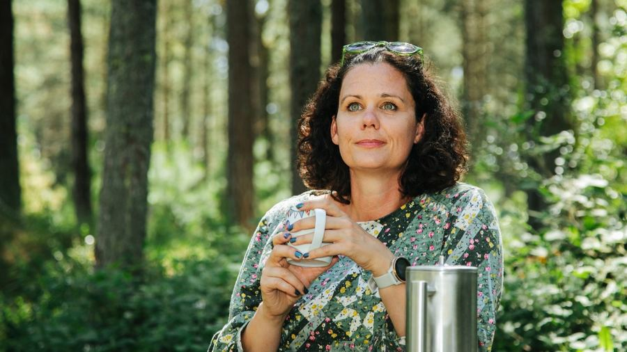
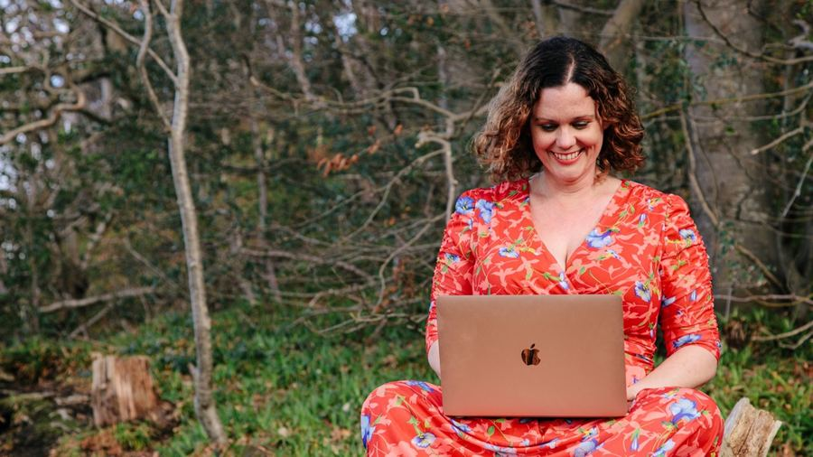
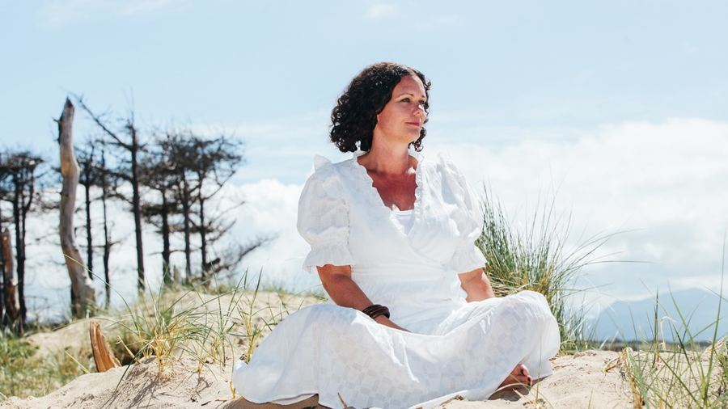

The Membership
Are you an OT wanting to create a freedom style business? This is the very place where OTs from across the world come together, to learn how to design, grow and scale an online business.
£197
a month, + VAT for UK residents added at checkout. 3-day free trial. No contract, cancel any time.
The OT Yourself to Freedom Membership is an educational programme, designed to help you design, launch and grow your online business. You get full access to the recorded programme, and you will have support via a community app.
You can attend multiple group calls per month. Some are with Beki, across different timezones. Other calls are with Katja, our Voice Alchemist who runs sessions on building confidence to support clients on their way to a successful business.
You also get a BONUS course, Magnetic Momentum, which is designed to boost your self-belief.
The three parts of the Membership

Understanding You
Discover your purpose and zones of genius, then tie in with your life story to create a high ticket offer that is totally aligned to you.

Business Strategy
You will learn how to master online sales and marketing using social media. We teach you how to launch, without needing to pay for ads or a website.

Mindset & Energetics
You will learn the basics on how to master your mind. Energetics is around 80% of your business success, so growth in this area is essential.
This is for you if you want
- a freedom based, online business
- to learn how to work less and earn more
- to learn how to get clients online
- to learn how to make 5-15k per month
- to understand sales and marketing strategies
- to grow your entrepreneurial mindset
- to meet with a like minded community of OT entrepreneurs
It is not for you if you are
- Hoping for a quick fix and not willing to put in the work
- Looking to create a busy practice or bricks and mortar style business
- Not willing to use social media to grow a business
- Looking for a side hustle or small hobby
- Have less than 5 hours per week to put in (10+ is preferable)
- Fixed in mindset and not willing to grow
What the Membership includes
£197
a month, + VAT for UK residents added at checkout
- Access to Magnetic Momentum, The Confidence Foundation for OTs (normally £40)
- Monthly group calls with Beki for business advice and Katja for growing in self-belief and confidence
- How to define your offer
- Energetic work to overcome blocks and limiting beliefs
- A vibrant community with OTs from across the world
- A personal call with Beki at month 3 to help you hone down your ideas
- Fun challenges designed to help you grow
- Modules on sales training
- Full access to the recorded programme with video, text and downloadable content
What is unique about this membership?
This membership is the only one in the world, specifically designed by a (former) OT to help OTs use skills they already have to create an online business in this way.
The focus is to create a high ticket offer. This means selling a programme that might sell for thousands instead of hundreds.
This membership will teach you how to design a high ticket offer that is inspired from your personal journey and life mission. Then we teach you how to market, launch and scale using social media.
The membership is unique because it also includes the energetics work to get you better results. In my experience business is not a linear experience, you will have challenges to face and much of it will be an internal battle.
This is not a prison. We are not going to force you to stay and we have made it very easy for you to leave at any time if you don't feel it's a good fit for you.
OT, UK
Membership member
“I started the membership and it gave me the reassurance I needed to know I do know what I need to do.”
“Not to doubt myself, rid the imposter syndrome and that is worth every penny of the investment I made.”
“I highly recommend Beki Eakins if you are an OT looking for a freedom lifestyle. She is a wealth of knowledge and an all round wonderful energy.”
You asked
How much support will I get on the membership?
This is a self-paced membership. You can work through this in your own time, and ask questions in the community and attend group calls.
You will get a 1:1 call with Beki after 3 months, this is the optimum time to really create your business, when you have worked through all of the first three modules.
There are a number of group calls per month, offered over different time zones with Beki and Katja, our Voice Alchemist.
What kind of businesses have previous clients made?
There are so many options of a business that people can design. You can use some traditional OT skills, or coaching, mentoring, supervision, consulting and of course education.
How long is the membership?
You can stay as long as you require, the payments are ongoing. It is anticipated that you will want to stay for at least 12 months, whilst working through the material.
What tools or extra purchases am I expected to make?
I will tell you to avoid spending money on anything that you absolutely don't have to.
A good computer or laptop will be useful, or a device that you can easily use apps like zoom, or spreadsheets on. A smartphone with a good camera is very useful for social media.
Good internet will always help. But I built my business from a campervan and forest house with terrible internet and still managed.
Alex left her job within 9 months
Alex does Mom coaching for those mums running on autopilot and hitting burnout. Alex has been a super fun client to work with.
Alex dived into shadow work and money mindset at the start, which were essential to learn how to sell her true worth, and not low value options.
After a group call on the energetics of content, Alex put out a piece of content that went viral. She had over 6000 new followers in one week, and made multiple sales from this one content piece!
Alex now has a business where she is magnetising clients to her, making regular sales and not working crazy hours to do it.
Client results
- J.V designed a high ticket offer of 6 hours trauma work for 1800 and sold it with ease!
- Nicola made 6k in 6 months!
- Clare filled her diary with 8 sales calls in just one week and was able to launch her group programme!
- Suzanne created and sold her first high ticket offer in just 4 weeks of working with us.
- Timothy started the year with a bang and signed up 10 clients!
- Julie designed, launched and sold her high ticket offer for 1500 in just 9 weeks!
- Michelle signed her first client within 3 weeks and then secured enough further clients to leave her day job!
- Bethany designed, launched and sold her high ticket offer in 11 weeks for over 2k! She also made multiple extra sales to her membership.
- Kaili had a 5k month her first month of working with us and sold her first high ticket offer within 9 weeks
Start with three free days.
£197 a month, + VAT for UK residents. Magnetic Momentum is included automatically when you join.